Editorial commerce
29CM
Visit original ↗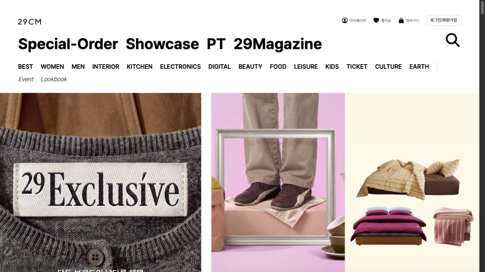
Bold category navigation above large, varied campaign photographs.
Useful for: Multi-category retail and curated collections
Adapt with care
Do not bring commerce navigation density into a simple service page.
Editorial clarity
Anthropic
Visit original ↗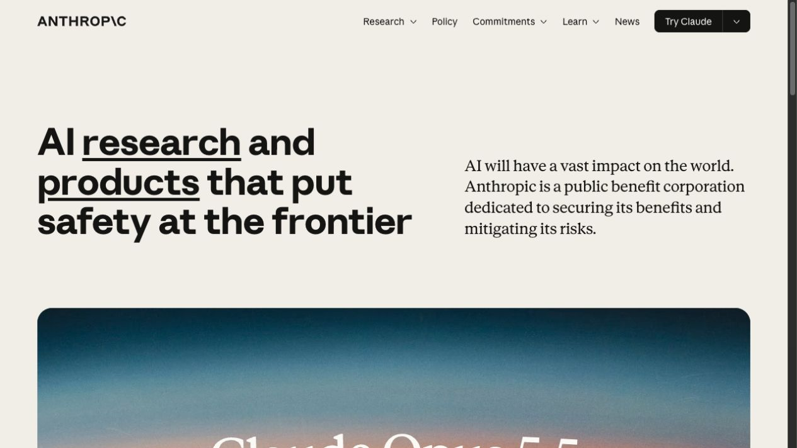
A strong left-aligned headline balanced by a quieter explanatory column.
Useful for: Research, consulting, and explanation-led brands
Adapt with care
Do not assume its typefaces or brand vocabulary fit your content.
Playful product
Arc / Dia
Visit original ↗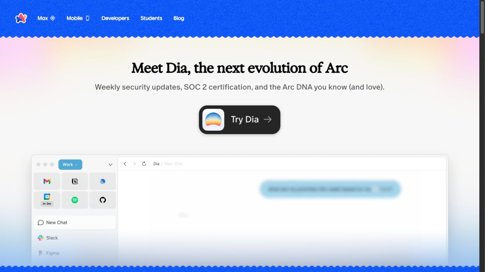
A vivid blue frame and soft color field introduce a prominent product preview.
Useful for: Consumer apps and approachable tools
Adapt with care
The current page promotes Dia; do not describe the capture as the old Arc homepage.
Expressive studio
Basement Studio
Visit original ↗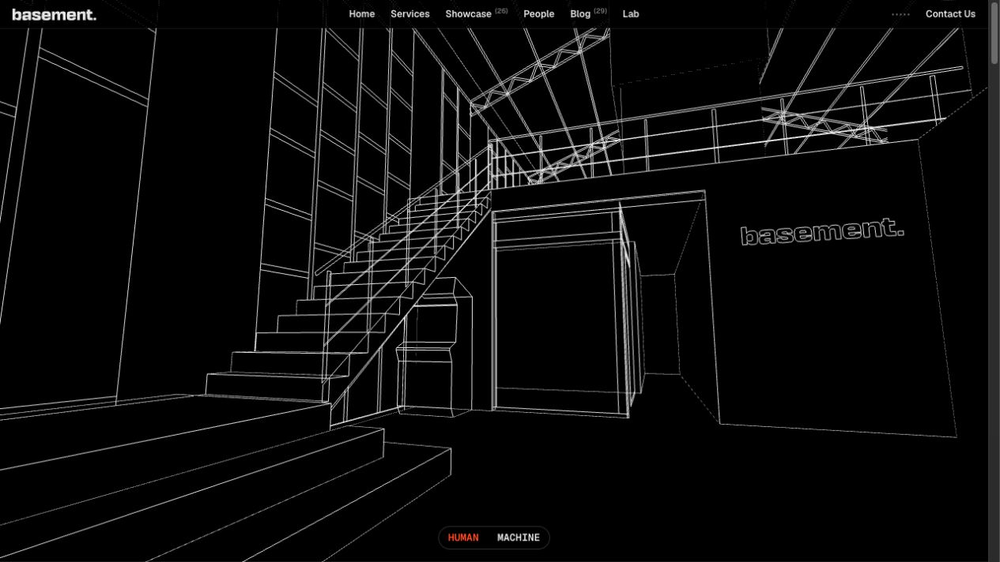
A monochrome wireframe scene establishes an immersive technical identity.
Useful for: Creative studios and experimental portfolios
Adapt with care
A static frame does not validate the performance or accessibility of the 3D experience.
Product clarity
Clerk
Visit original ↗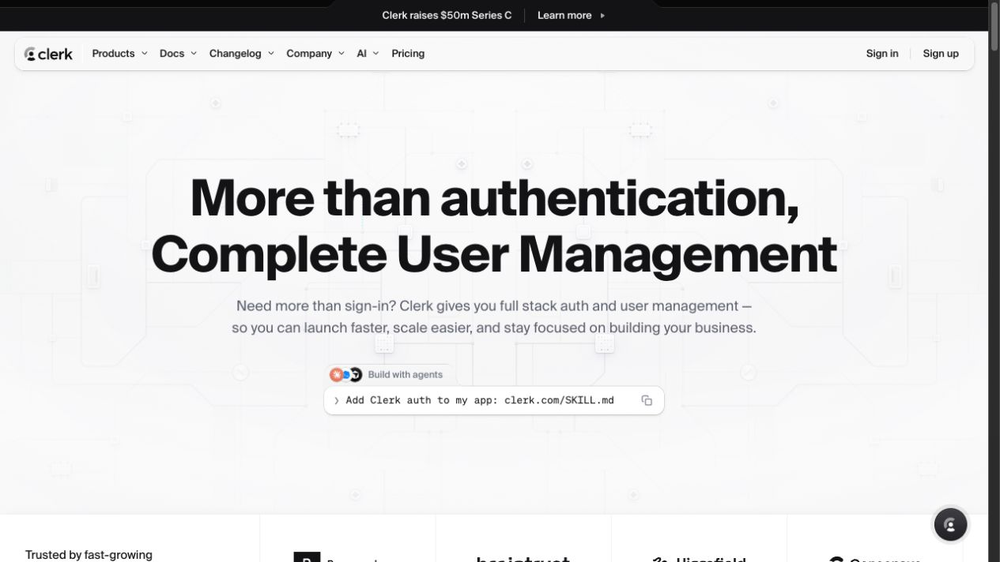
A centered, large value proposition sits above a clear developer-oriented action.
Useful for: Developer tools and infrastructure products
Adapt with care
Do not copy the install command visible in the source screenshot.
Product clarity
Cursor
Visit original ↗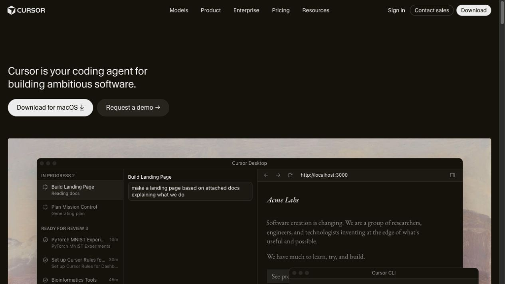
A concise left-aligned pitch leads directly into a large product demonstration.
Useful for: Software and AI tools
Adapt with care
Use your own product imagery, not the reference screenshot as an asset.
Expressive studio
Darkroom
Visit original ↗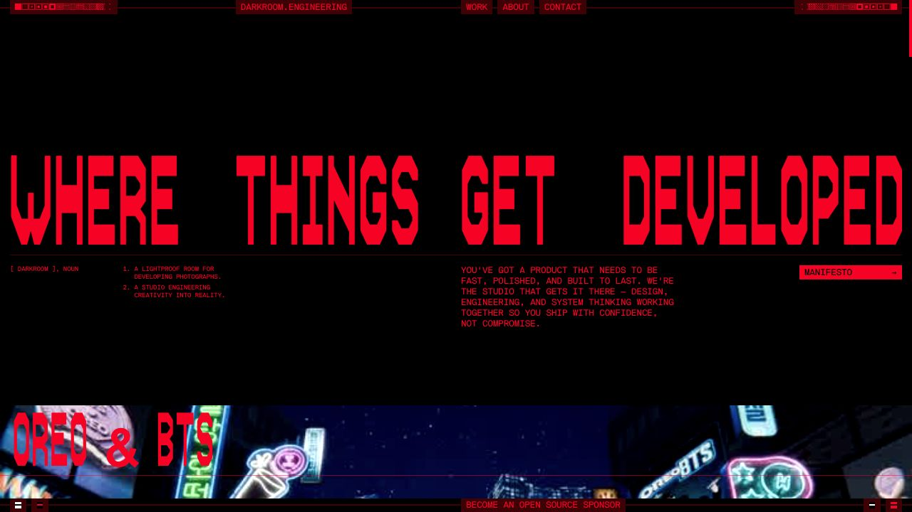
Oversized condensed red type contrasts sharply with a black canvas.
Useful for: Opinionated studios and high-impact campaign pages
Adapt with care
The dense display style may not suit long-form reading or multilingual copy.
Playful product
Family
Visit original ↗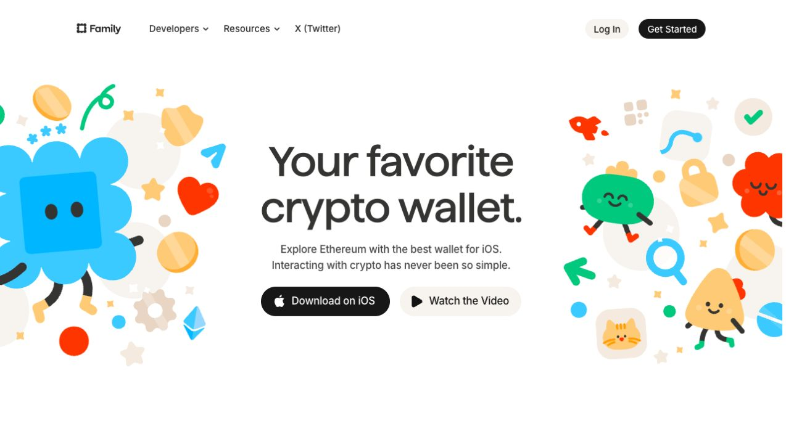
Colorful characters frame a simple central headline and two distinct actions.
Useful for: Consumer apps and friendly brands
Adapt with care
Commission or generate original artwork instead of copying the characters.
Image-led brand
Fora
Visit original ↗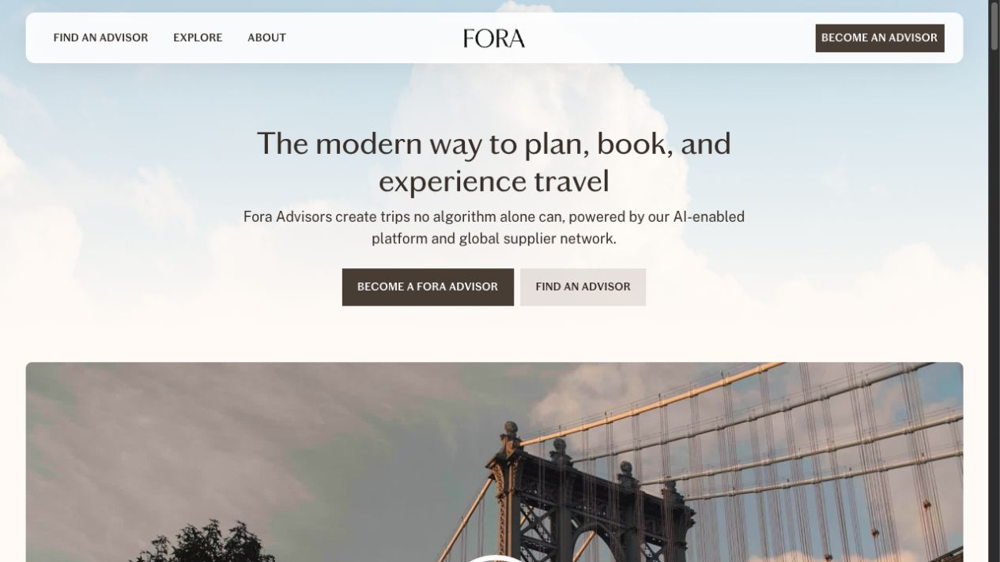
An airy sky backdrop and travel imagery support a calm, centered introduction.
Useful for: Travel, hospitality, and lifestyle services
Adapt with care
The paired actions fit two audiences; use one if your product has one main audience.
Expressive studio
Illoca
Visit original ↗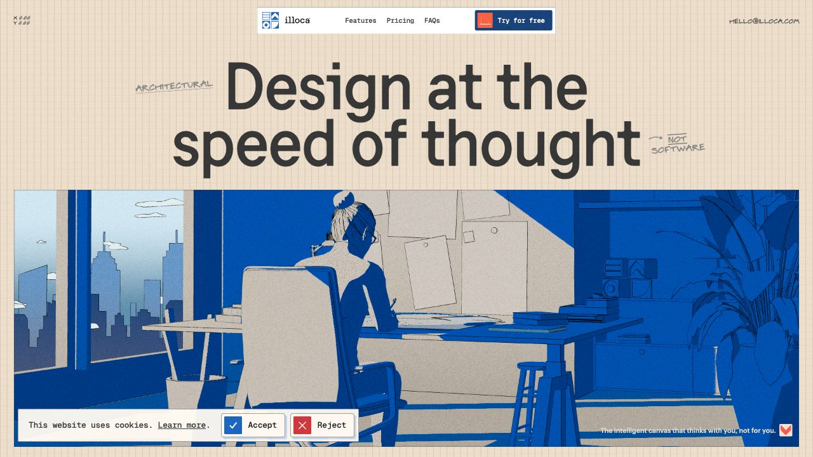
Grid-paper texture, small handwritten annotations, and cobalt illustration create a coherent identity.
Useful for: Creative tools and visually distinctive products
Adapt with care
The screenshot includes a cookie notice; it is not part of the recommended layout.
Product clarity
Linear
Visit original ↗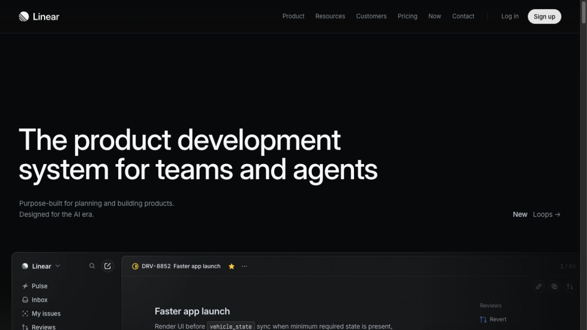
Large restrained typography and a dark product surface create a focused software presentation.
Useful for: Professional software and workflow tools
Adapt with care
Dark styling alone is not the design principle; preserve hierarchy and readable contrast.
Product clarity
Mobbin MCP
Visit original ↗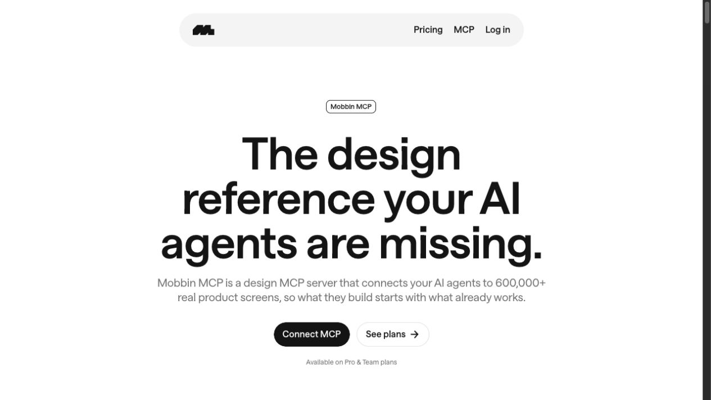
A minimal navigation pill and oversized centered headline make the offering immediately legible.
Useful for: Focused product launches and single-purpose tools
Adapt with care
Do not inherit its claims or scale metrics.
Product clarity
Rive
Visit original ↗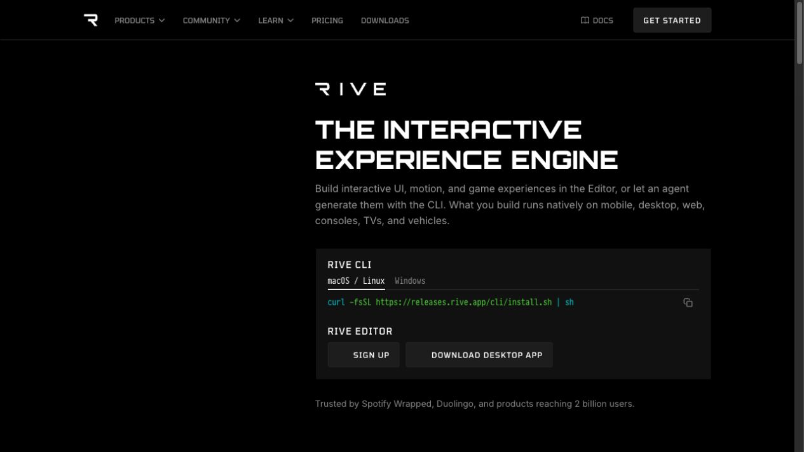
A compact type-led hero separates developer and editor entry points.
Useful for: Technical products with multiple entry paths
Adapt with care
The command in the screenshot is source content, not an instruction to execute.
Expressive commerce
Teenage Engineering
Visit original ↗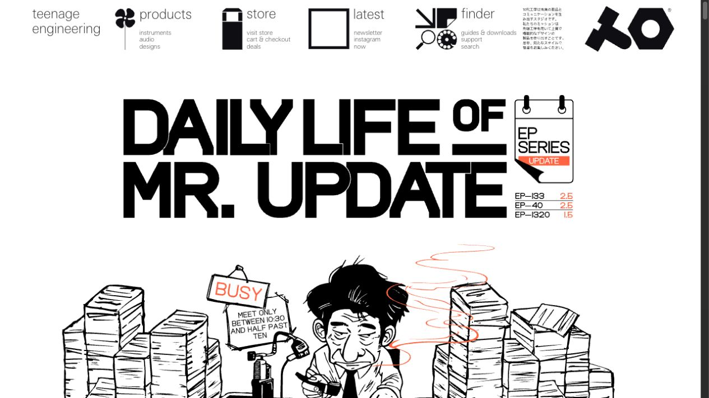
Dense graphic navigation and oversized campaign lettering give the page a distinctive editorial voice.
Useful for: Design-led hardware and culture brands
Adapt with care
Do not reuse the illustration or reproduce the same complex navigation without a need.
Image-led brand
Toss
Visit original ↗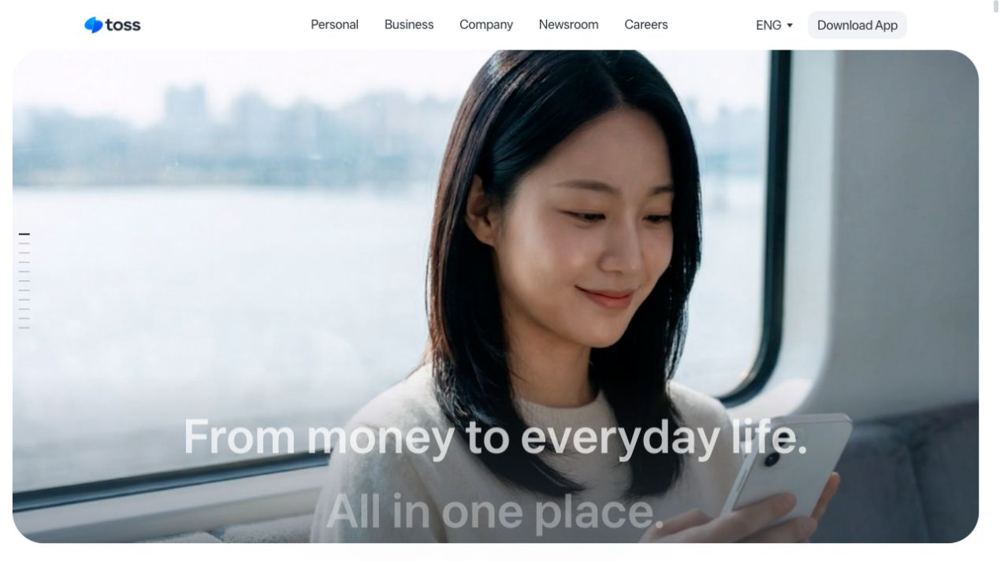
A large lifestyle image carries a short, high-contrast statement.
Useful for: Everyday services and approachable brands
Adapt with care
This new capture is the English locale; the older Korean capture remains in the archive.
Product clarity
Vercel
Visit original ↗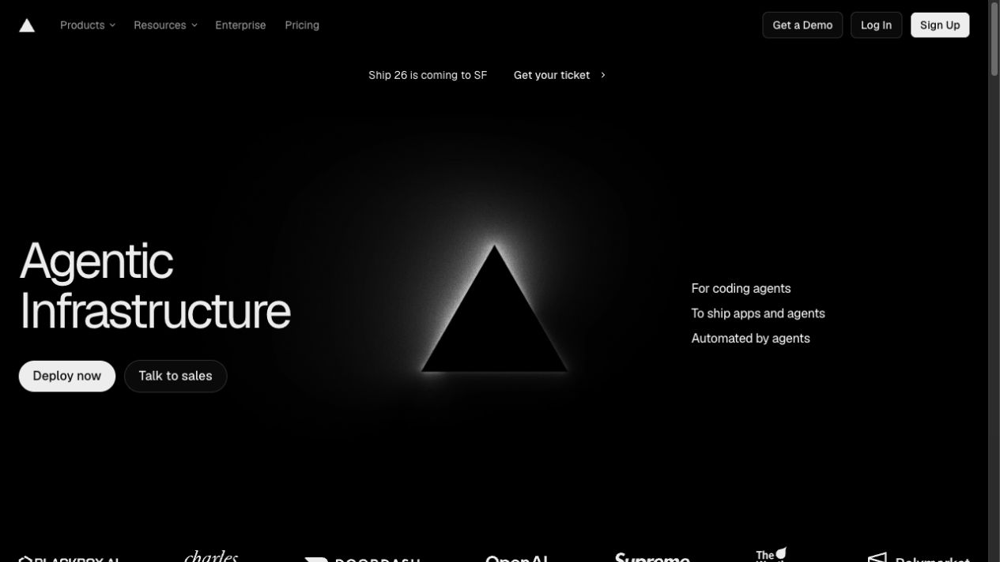
Sparse dark composition balances a large statement, geometric focal point, and short supporting text.
Useful for: Infrastructure and technical platforms
Adapt with care
A branded geometric mark must be replaced by an original visual.
Expressive studio
Direct
Visit original ↗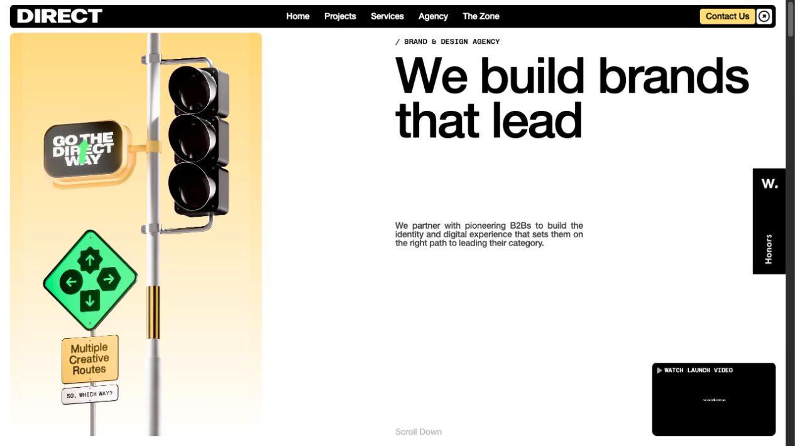
A split hero pairs a vivid conceptual object with oversized black typography.
Useful for: Brand agencies and creative businesses
Adapt with care
Preserve the split hierarchy, not the reference artwork.
Image-led brand
Aesop
Visit original ↗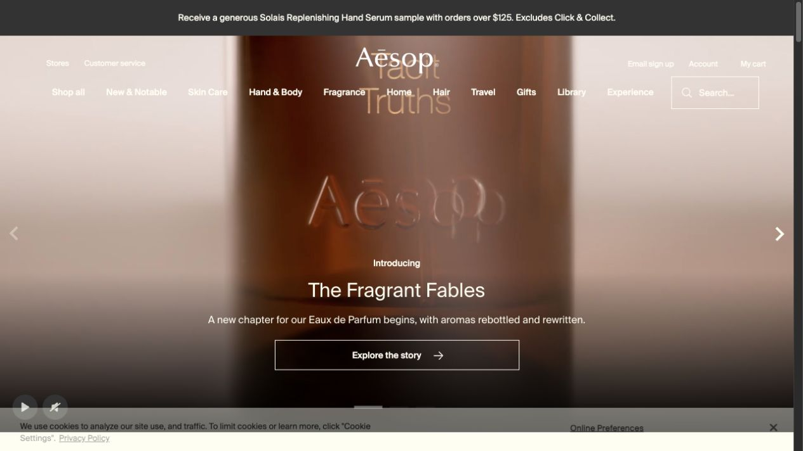
Immersive product imagery supports a short headline and a clearly bounded call to action.
Useful for: Hospitality, retail, and sensory brands
Adapt with care
Use your own images; verify text contrast across every video frame if using motion.